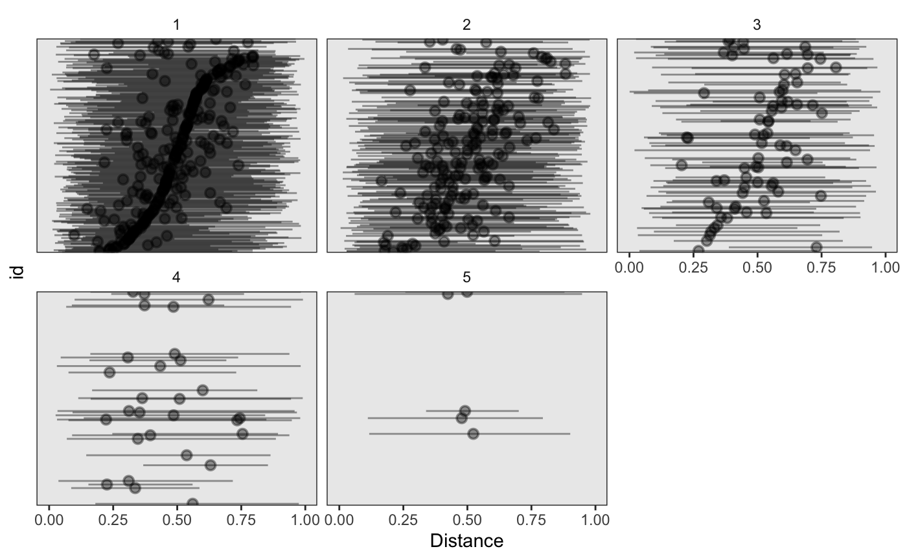

Getting Started with Benvos
Introduction.RmdIntroduction
This vignette serves to introduce the philosophy and structure of the rbenvo package, which impliments Benvo classes: Built Environment Objects. These classes make working with built environment data easier by offering a common interface to do so. We’ll illustrate some of the very basics of how to use benvo’s in this vignette as well as give some references as to how it might be used in other packages or settings.
We’ll begin by loading the library and the two example datasets involving subjects living near Fast Food Restaurants (FFR). One of the two datasets will be for the subject level information, FFR_subjects, the other will contain some measure of exposure (space/time) that describe how long and how close subjects are located near the nearby Built Environment Features (BEFs).
The subject dataframe should look familiar. This is a tidy dataset with an ID and two subject-level measures: BMI and sex.
head(FFR_subjects,5)
#> id BMI sex
#> 1 1 28.88282 1
#> 2 2 32.98662 1
#> 3 3 46.94367 0
#> 4 4 30.17669 1
#> 5 5 43.31416 0The distance dataframe is a tidy “long” dataframe, containing multiple nearby BEF exposures per subject
head(FFR_distances,5)
#> id Distance
#> 1 1 0.7731216
#> 2 1 0.7339080
#> 3 1 0.9966941
#> 4 1 0.4702982
#> 5 1 0.5233440In order to create a benvo we’ll pass the two dataframes to the benvo() function, wrapping the FFR_distances data frame in a list. We’ll also pass the BEF name we want, along with the joining id name and the name of the column that contains the distance measures.
bdf <- benvo(subject_data = FFR_subjects,
bef_data = list(FFR_distances),
bef_names = "FFR",
joining_id = "id",
distance_col = "Distance")
bdf
#> Subject Data:
#> ---------------------------:
#> Observations: 1000
#> Columns: 3
#>
#> BEF Data:
#> ---------------------------:
#> Number of Features: 1
#> Features:
#> Name Measures
#> 1 FFR DistanceSimple Descriptives
We can see from the above a simple summary of the kind of feature that we have data on. If we call the bef_summary function we’ll get a more detailed understanding of the bef data available.
bef_summary(bdf)
#> # A tibble: 1 x 7
#> # Groups: BEF [1]
#> BEF Distance_Time Lower Median Upper Number Num_NA
#> <chr> <chr> <dbl> <dbl> <dbl> <int> <int>
#> 1 FFR Distance 0.0278 0.504 0.975 9501 0Finally, as one last descriptive offering, we can plot a pointrange of the distances for each subject using the plot_pointrange function and passing the BEF label we want plotted. You’ll see that there are several observations missing, since not every subject lives near a FFR.
plot_pointrange(bdf,"FFR","Distance")
#> Warning: Removed 49 rows containing missing values (geom_pointrange).
Other packages
While the above descriptive statistics are nice, the real power of using benvos is that they offer functions like joinvo to easily join the subject and bef data frames, which can be useful in setting up the data for models in other packages. Below we’ll use the joinvo function, passing the benvo, bef character label, and TRUE to the tibble argument, denoting that we want a tibble object returned from the function.
joinvo(bdf,"FFR",tibble=T)
#> # A tibble: 9,550 x 4
#> ID Distance BMI sex
#> <int> <dbl> <dbl> <int>
#> 1 1 0.773 28.9 1
#> 2 1 0.734 28.9 1
#> 3 1 0.997 28.9 1
#> 4 1 0.470 28.9 1
#> 5 1 0.523 28.9 1
#> 6 2 0.369 33.0 1
#> 7 2 0.533 33.0 1
#> 8 2 0.779 33.0 1
#> 9 2 0.723 33.0 1
#> 10 2 0.375 33.0 1
#> # … with 9,540 more rowsSimilarly, it is often the case - in my work at least - that some sort of model involving both the built environment data and the subject level data is needed. This means that information is incorporated at the subject level. This could manifest in, for example, the construction of a subject design matrix. Below I’ll demonstrate how this works in a cross sectional as well as longitudinal framework, whilst highlighting how some of the previous functions take advantage of the longitudinal structure.
str(subject_design(bdf,BMI ~ sex))
#> List of 2
#> $ y: Named num [1:1000] 28.9 33 46.9 30.2 43.3 ...
#> ..- attr(*, "names")= chr [1:1000] "1" "2" "3" "4" ...
#> $ X: num [1:1000, 1:2] 1 1 1 1 1 1 1 1 1 1 ...
#> ..- attr(*, "dimnames")=List of 2
#> .. ..$ : chr [1:1000] "1" "2" "3" "4" ...
#> .. ..$ : chr [1:2] "(Intercept)" "sex"
#> ..- attr(*, "assign")= int [1:2] 0 1Longitudinal Example
For our longitudinal example we’ll look at a dataset that imagines a hypothetical set of grocery or “Healthy Food Stores”(HFS) near subjects. Subjects or grocery stores may move over time so this will be reflected in our data.
data("longitudinal_HFS")
longitudinal_HFS
#> Subject Data:
#> ---------------------------:
#> Observations: 596
#> Columns: 6
#> Num Subjects: 300
#>
#> BEF Data:
#> ---------------------------:
#> Number of Features: 1
#> Features:
#> Name Measures
#> 1 HFS Distance-Timebef_summary(longitudinal_HFS)
#> # A tibble: 10 x 8
#> # Groups: BEF, Distance_Time [2]
#> BEF Distance_Time Measurement Lower Median Upper Number Num_NA
#> <chr> <chr> <int> <dbl> <dbl> <dbl> <int> <int>
#> 1 HFS Distance 1 0.0275 0.486 0.971 2845 0
#> 2 HFS Distance 2 0.0278 0.492 0.973 1772 0
#> 3 HFS Distance 3 0.0240 0.503 0.959 743 0
#> 4 HFS Distance 4 0.0233 0.438 0.988 272 0
#> 5 HFS Distance 5 0.0390 0.478 0.962 53 0
#> 6 HFS Time 1 0.131 2.55 4.87 2845 0
#> 7 HFS Time 2 0.156 2.47 4.87 1772 0
#> 8 HFS Time 3 0.130 2.64 4.88 743 0
#> 9 HFS Time 4 0.115 2.71 4.91 272 0
#> 10 HFS Time 5 0.201 2.57 4.65 53 0plot_pointrange(longitudinal_HFS,"HFS","Distance")
#> Warning: Removed 24 rows containing missing values (geom_pointrange).
str(longitudinal_design(longitudinal_HFS,BMI ~ sex + (1|ID)),max.level=1)
#> List of 3
#> $ y : num [1:596] 28.1 29.4 29.7 30.6 28 ...
#> $ X : num [1:596, 1:2] 1 1 1 1 1 1 1 1 1 1 ...
#> ..- attr(*, "dimnames")=List of 2
#> ..- attr(*, "assign")= int [1:2] 0 1
#> ..- attr(*, "msgScaleX")= chr(0)
#> $ glmod:List of 6